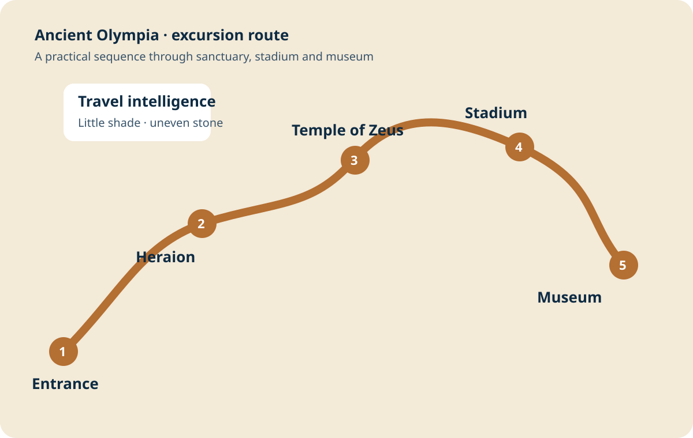

Olympia Premium chapters
Aug 26Ancient Olympia
12:30 PMExcursion departure
4 hoursBooked duration
ModerateUneven walking
Olympia: sanctuary of the games
This is not a preserved city like Ephesus. It is a sacred landscape whose meaning comes from the Temple of Zeus, the stadium and the museum together.

Field briefing
Before you go
Heat, footing, water and how to read a low-lying archaeological site.
Core site
The sanctuary
Temple of Zeus, Heraion, Philippeion and the sacred Altis.

Signature experience
The stadium
Enter through the vaulted passage and understand how the ancient contests worked.

Do not rush
Museum priorities
Hermes, Nike and the pediments of the Temple of Zeus.

Offline orientation
Map & route
A click-to-enlarge sequence from entrance through stadium and museum.